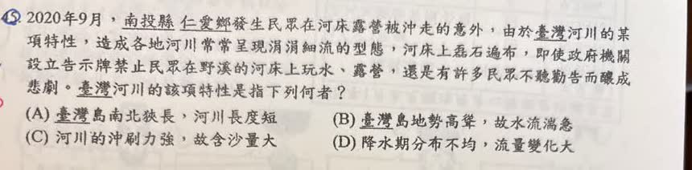

分享原卷｜第45題
完整原題
2020年9月，南投縣仁愛鄉發生民眾在河床露營被沖走的意外，由於臺灣河川的某項特性，造成各地河川常常呈現涓涓細流的型態，河床上磊石遍布，即使政府機關設立告示牌禁止民眾在野溪的河床上玩水、露營，還是有許多民眾不聽勸告而釀成悲劇。臺灣河川的該項特性是指下列何者？
(A) 臺灣島南北狹長，河川長度短
(B) 臺灣島地勢高聳，故水流湍急
(C) 河川的沖刷力強，故含沙量大
(D) 降水期分布不均，流量變化大
先想一想，再查看答案、解說與原圖
原卷作答：C；紅筆訂正B，與原AI及本解說暫選D不同
正確答案：D，降水期分布不均，流量變化大。
逐項解析
| 選項與原句 | 判讀 | 句意與判斷理由 |
|---|---|---|
| (A) 臺灣島南北狹長，河川長度短 | 不選 | 主要涉及河長，未直接說明涓涓細流與水量變化。 |
| (B) 臺灣島地勢高聳，故水流湍急 | 不選 | 地勢高聳可解釋流速較急，但題文著重少雨時細流與多雨時流量增大，因此不選B。 |
| (C) 河川的沖刷力強，故含沙量大 | 不選 | 涉及沖刷及含沙，非題文強調的水量差異。 |
| (D) 降水期分布不均，流量變化大 | 應選 | 降水期分布不均使河川流量大小變化明顯，最直接對應題文。 |
詳細說明與解題步驟
【題文著重什麼】
題文特別描述河川常呈涓涓細流、河床石塊露出，卻仍可能在水量增大時發生意外。降水在時間上的分布不均，使河川流量在少雨與多雨時期差異很大，因此答案D最直接。
【B為什麼容易混淆】
地勢高聳、坡度大，確實有助於說明臺灣河川水流湍急，也可能與水流危險性相關；但它不能直接說明題文強調的平時細流與水量明顯改變。要分清「地形造成流速較快」與「降水變化造成流量差異」兩種因果。
A的河川較短、C的沖刷與含沙量，也沒有D直接對應題文所描述的流量變化。
【原卷批改紀錄】
學生原作答C，原卷紅筆改成B；使用者已確認正確答案為D。原圖與批改照留，但解題應依題文強調的流量變化選D。
【來源AI概括的修正】
原AI把臺灣概括為夏秋多雨、冬春乾旱，不能套用到所有地區；例如北部、東北部的降雨季節分布另受季風影響。本題只需理解降水時間分布不均與流量變化，不把全臺各地的乾濕季節視為完全一樣。
核對註記：完整原題與四選項已核對；使用者確認答案D，原卷紅筆B保留作批改紀錄，已結案。
原圖（僅本題）
